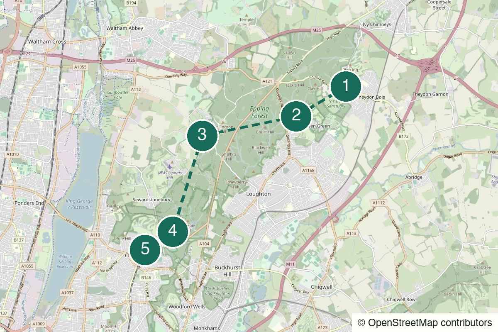

Outside London Not yet field-walked
Marlow to Hambleden
A train-out Thames walk for river meadows, two locks, a proper village pub and the satisfying simplicity of walking back the way you came.
Start Marlow rail station
Not yet field-walked · verify live details
A long Epping Forest crossing for oak, heath, damp ground and a day that has no need to become a pub crawl.
Desk-checked or awaiting another field walk – details not yet reconfirmed.
Desk-checked from City of London Epping Forest access and path information in July 2026. The forest access points and Oak Trail are documented; this 16 km through-route still needs a field trace before it can claim one continuous signed line.
No field notes from readers yet — share one if you walk it.
Take the Central line to Theydon Bois, then return from Chingford on the Overground. Both legs are straightforward, but live TfL service changes and engineering work still matter.
Theydon Bois Underground station – Leave the station onto Coppice Row, then use Theydon Green and Theydon Plain as the first clear forest markers.
Theydon Plain
Open detailed route (opens in a new tab)
Prototype forest traverse: the official sources confirm both access points and the Oak Trail, but this card does not claim a fully waymarked 16 km route. Carry a live map, use known access points and turn it into the 10.5 km Oak Trail loop if conditions or navigation are not generous.
We never ask for your location.
Leave the Central line and take the slightly awkward pleasure of walking straight into Epping Forest. Start with the plain, move through the waymarked woodland and let High Beach become a pause rather than a destination. The second half is the point: longer, quieter and less certain in a good way, until Chingford turns the forest back into a train journey home.
Not a signed station-to-station promenade, a panoramic hike or a day built around hospitality stops.
Good for people who already know they enjoy walking together. It gives you quiet, not a series of conversation prompts.
Keep it small. Agree before leaving the station that the shorter Oak Trail is a success, not a compromise.
A strong solo day only with offline navigation and a realistic daylight cut-off. The forest does not owe you a clean signal or a dramatic ending.

Theydon Bois Underground station, CM16
From the start Exit via Coppice Row, walk through Theydon Green and use the City of London guide to reach the plain and forest edge.
The useful transition: a Tube platform, a village edge, then ground that has no interest in feeling like London.
Walk here from the station to Theydon Bois station → Theydon Plain (opens in a new tab)Official information for Theydon Bois station → Theydon Plain (opens in a new tab)
Oak Trail, Epping Forest
From the previous stop Follow the Oak Trail waymarkers where they support the day’s line. If paths are muddy or confidence drops, make this the shorter loop and return to Theydon Bois.
The first long middle: old woodland, changes in ground underfoot and no need to turn every clearing into content.
Walk from the previous stop to Oak Trail woodland (opens in a new tab)Official information for Oak Trail woodland (opens in a new tab)
High Beach, Epping Forest
From the previous stop Use this as a rest and orientation point. Re-check the live map before taking the longer south-westward forest line toward Chingford.
A clearing in the day rather than a programmed stop. Eat the lunch you brought, look at the map and decide honestly whether the through-route still feels right.
Walk from the previous stop to High Beach (opens in a new tab)
Chingford Plain, Epping Forest
From the previous stop Continue only on clear public tracks or the live mapped route. Do not improvise a shortcut across unfamiliar forest ground as daylight fades.
The last wooded stretch should feel like a landing, not a race. Once the forest starts thinning, keep the station as the only required ending.
Walk from the previous stop to Chingford Plain forest edge (opens in a new tab)
Chingford rail station, E4
From the previous stop Use a live walking map for the final exit to the station and check the Overground service before leaving the forest edge.
No compulsory final pint. The train is the relief and the ending; stop while the forest is still the thing you remember.
Walk from the previous stop to Chingford station → train home (opens in a new tab)Official information for Chingford station → train home (opens in a new tab)
Variable forest paths, grass, leaf litter and occasional slopes. It is less a view walk than a navigation-and-atmosphere walk; wet ground and muddier tracks are part of the deal.
Expect mud after rain, especially on low ground and under the trees. Waterproof footwear is sensible for much of the year.
Most of the route is sheltered by woodland, but heath and plain sections can feel cold and exposed in wind.
Forest roads and crossings appear around access points; use marked crossings and do not assume a green line on a map means a safe crossing.
Do not rely on a stile-free, accessibility-ready route; the trail surface and gates vary.
Bring lunch, water and a warm layer. This is deliberately not a route that depends on a café opening at the right moment.
Use facilities before leaving London or at the stations. Do not expect dependable public toilets in the forest interior.
Often usable but uneven under tree cover. Download the official information and keep a charged phone.
No pub stop is designed into this route. The useful finish is the train, not a search for somewhere open.
Use the waymarked 10.5 km Oak Trail from Theydon Bois and return to the same station if conditions, daylight or confidence make the through-walk the wrong choice.
Nearest practical station: Chingford rail station
Use the live map for the final route out of the forest to Chingford station, then check the Overground service before deciding whether the day needs anything more.
Earlier exit: Theydon Bois Underground station – The dependable early fallback is to use the Oak Trail as a loop and return to the station. Do not leave the forest for an unplanned road exit without a live map.
Dry spring, autumn or crisp winter weather
Pack enough food to make High Beach a pause. No food venue is necessary to the logic of the route.
Use the documented 10.5 km Oak Trail and return to Theydon Bois when the full traverse is not the generous choice.
The prototype 16 km Theydon Bois-to-Chingford version for a dry day, early start and confident navigation.
Take the Oak Trail loop only if conditions are manageable; otherwise postpone. Mud and bad visibility make a prototype through-route less interesting, not more authentic.
Keep the finish at Chingford station. The restraint is part of why this route feels unlike the pub-led ones.
The safe short version returns to Theydon Bois. Do not leave the forest for an improvised station run without checking a live map.
Help keep it useful
Closed gates, changed hours and the point where you bailed are more useful than polite applause.